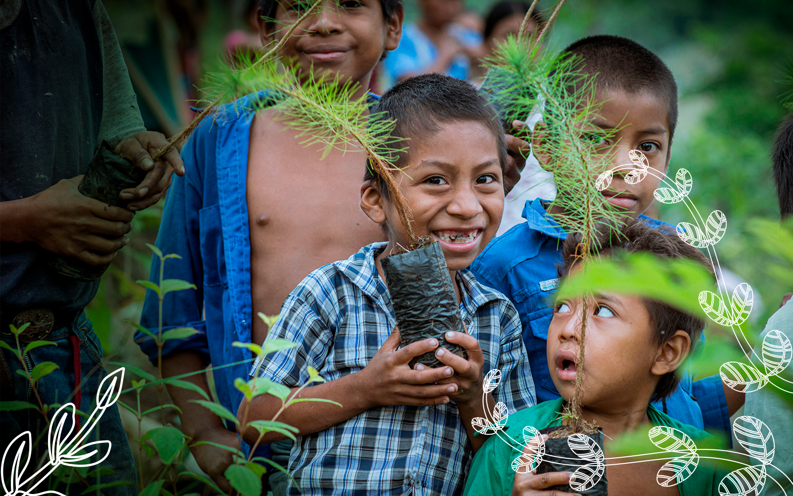
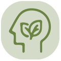
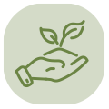
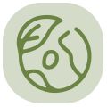

Promovemos la conciencia ambiental, la formación,
los valores y las prácticas sostenibles en
las comunidades donde trabaja nuestra red.
Promovemos conocimientos, valores y prácticas que fortalecen el cuidado del medio ambiente y el desarrollo sostenible de las comunidades.

Establecemos conveios con instituciones educativas y con el Ministerio de Educación para impartir cursos y capacitaciones al personal que cursos y se mantiene en constante actualización.

Capacitamos a un total de 10,000 personas anuales en la protección ambiental y el uso responsable de los recursos naturales en las regiones donde se esté laborando.

Formamos a nuestros miembros y colaboradores en el manejo adecuado de los recursos y en la reducción de la degradación ambiental generada por nuestras actividades.

Formamos personas conscientes y responsables con el medio ambiente, impulsando conocimientos, valores y prácticas sostenibles en cada comunidad.

Fomentamos valores como el respeto, la responsabilidad y solidaridad para construir comunidades comprometidas con el cuidado del planeta.

Impulsamos acciones y hábitos que reducen el impacto ambiental y generan un cambio positivo y duradero en nuestras comunidades.